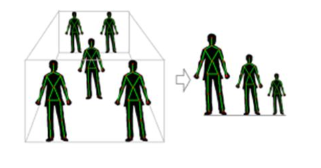
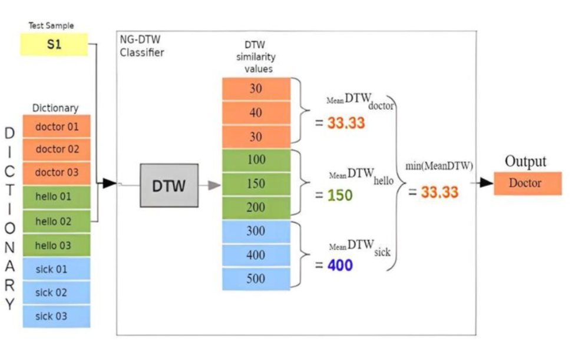

Real Time Sign Language Translation using Microsoft XBOX Sensor
Copyright Registered at Government of India
Published in International Journal of Creative Research Thoughts (IJCRT), April 2023
Abstract
Millions of deaf people use sign language every day to communicate their ideas and emotions. Those who have trouble hearing and speaking can communicate a lot more effectively by using sign language. By this effort, deaf persons are given the tools and motivation they need to successfully integrate into society by making significant contributions to it. The main objective of this project is to create software capable of doing real-time sign-to-speech and speech-to-sign conversions utilizing deep learning and convolutional neural networks. Using the specially created Microsoft Xbox Kinect Sensor, the model recognizes the hand gestures with accuracy. The program's goal is to identify movements made by deaf and dumb users, display the appropriate text and audio to sighted users, record sighted users' voice input, and simultaneously record and display the matching gestures to the handicapped user.
Index Terms - : Deep Learning (DL), Convolutional Neural Network (CNN), Kinect Sensor
Introduction
Nature has given humans the ability to speak, which enables them to connect and communicate with one another. One of the key characteristics of humans is spoken language. Regrettably, not everyone has this talent since they are deaf or have trouble speaking or hearing. Loss of hearing or speech can make people feel alone and alienated, which has a significant impact on both their social and professional lives. Sign language is used to bridge the communication gap between able-bodied people and those with disabilities. The well-organized gesture language of sign language, where each motion has a specific meaning. This is the most crucial means of communication between the community of the disabled and a regular person. It has been noted that the average person cannot understand sign language. Hence, this mechanism is put in place to solve the issue and enable communication. The disabled person performs an action in front of the Kinect camera when he wants to speak with a regular person[4]. The user's activities will be recognised by the camera, which will also display the human body's skeleton. When a user stands in front of the Kinect sensor, the camera renders the human body's skeleton with pinpoint accuracy. Afterwards, these activities are compared to actions that are already stored in the dictionary. All of the actions and associated content are kept in a dictionary. If a match is made, the relevant text appears on the screen. However, if a regular person wishes to communicate, he will provide audio input. The Kinect sensor is used to record this input. The output will then be presented as animated text and visuals. We can dynamically add an action to the dictionary whenever the impaired user carries out one that isn't already recorded there. Hence, there is no need to alter the source code constantly[1]. Moreover, dynamic actions and their accompanying values are recorded in the dictionary. Consequently, an interactive dialogue will occur in the manner described below. Two-way communication is how this system functions. With the use of this system, disabled users can converse with able-bodied people and vice versa. It entails that it can translate actions taken by people with disabilities into language that is understandable to healthy individuals and vice versa. This system employs specialised hardware and software mapping to generate the desired outcome.
Literature Review
In [1], a method is put forth for the recognition of 36 static PSL alphabets using just the hands. The data set was gathered from the movies of sign language. Four vision-based characteristics are then extracted: local binary patterns, an edge- directed histogram, a histogram of oriented gradients, and sped-up robust features. Here, three kernel functions are used to classify each feature set, and each feature's accuracy is just 15%. Accuracy will rise if other features, such as maximally stable extremal regions (MSER) features, are used instead of SURF. The dataset still has a lot of space for improvement. Furthermore, [2] introduces a general framework in which Multiple Kernel Learning is used to merge the internal representations calculated by a deep neural network in the most effective way possible. With the help of deep learning models, the algorithm may be made even more efficient while correctly classifying the outcome to boost accuracy even further. The proposed method [3] is examined using a data set of signs that was gathered with the assistance of seven native signers. Precision, recall, accuracy, and the f-measure are used to gauge how well the suggested technique performs, and the classification matrix, tabular data, and graph representations are used to further explain it. The suggested method has produced remarkably good categorization results but it also takes a lot of time and computer resources. By precisely defining the location of the hands and the head, the proposed resolution methodology in [4] can perform better than the other methods. The created approach avoids the requirement for two cameras and a delicate calculation to weigh the two views from both cameras in order to create a 3D model of hand posture. Human gesture recognition reviews have already been presented in [5] and [6]. They primarily used 2D information, and just a small percentage of them used depth data (3D).
Materials & Methods
Methodology

In the given block diagram (Fig 1), there is a deaf user in front of a camera, either performing a sign or preparing to do so. The camera captures frames at a rate of 30 frames per second (fps), and the video stream is updated with the user's skeleton overlapped onto it. When the user wants to record a sequence, three main blocks are executed. Firstly, the information about the joints of interest (JoI) needed for the frame descriptor is gathered. Second, these data are normalized. Third, the frame descriptor is built.If the system is in TRAINING mode, which means the user is adding a new sign to the training set, the frame descriptor is added to the corresponding file in the dictionary. On the other hand, if the system is in TESTING mode, which means the user wants to translate the sign being performed, the frame descriptor is added to the current test sample. The system then determines if the current frame is the sign's final frame.
Once a sign is completed, and if the system is in TESTING mode, the test sign is compared with the signs in the dictionary using a classifier, and the corresponding output, which represents the word in the spoken language, is displayed for the ordinary user to see. After that, the system proceeds with the next frame, and the flow of the block diagram is repeated.
Joints of Interest (JoI): -
OpenNI/NITE, a system used for tracking joint positions, has the capability to track up to 15 joints. However, after analysing the signs in the proposed default dictionary for the system, it was found that only 4 joints out of the 15 are significant for describing a sign, specifically the hands and elbows on both sides. Other joints such as shoulders, knees, and feet remain relatively static during the execution of a sign, so tracking them would result in redundant information. However, some additional joints, namely the head and torso, are still required for normalization and sign modelling steps. By including these additional joints, the list of tracked joints at each frame is reduced from 15 to 6, as shown in Fig 3 along with the corresponding notation that will be used moving forward.

Normalization of Data: -
1) Invariant to user’s position: -
It is important to take the user's position into consideration during the normalization process. Since the deaf user can be in various locations across the room, the data must be saved in a way that accounts for these different locations. However, even a small change in depth can result in significant changes in the X and Y values of the joints. Depending on the user's location, the distances between joints can vary greatly, which can be a cumbersome task to account for. To address this, instead of recording the Cartesian coordinates of the joints using OpenNI/NITE, a better approach is to normalize the joint coordinates with respect to the torso. As shown in Fig 2, only 6 main joints are considered, namely the Head (H), Left Elbow (LE), Left Hand (LH), Right Elbow (RE), Right Hand (RH), and Torso (T). Using the torso as the reference point for normalization allows for the system to be position-invariant, as the torso position remains relatively constant regardless of the user's location or orientation in the room. This simplifies the normalization process and ensures that the system can accurately capture sign language gestures regardless of the user's position in the room.
2) Invariant to user’s size: -
The system needs to be able to accurately translate sign language gestures to the proper word, regardless of the height or size of the impaired user[2]. However, assigning each word to every potential user size in the database can be challenging and time-consuming. This would also significantly increase the classification time. To address this, each joint is expressed in terms of its relative distance (d) to the torso joint and the two angles that specify the direction of the distance, after normalizing for the user's location. As shown in Fig 3, the impaired person may be standing at any position in the room and may have different heights. Therefore, normalizing the data for the user's positions and size is crucial in order to accurately capture sign language gestures and ensure that the system can effectively translate them to the corresponding words, regardless of the user's height or size. This normalization process allows the system to account for individual differences in user height and size, making it more robust and adaptable to different users.
Sign Descriptor: -
After obtaining and normalizing the Joint of Interest (JoI) data, the next step is to build a descriptor for each sign. This descriptor needs to be able to uniquely and sufficiently differentiate each sign from the other signs in the dictionary. In the initial evaluation of the system, it was found that a certain feature did not provide meaningful information. As a result, the final 8-dimensional descriptor was chosen, which includes the spherical coordinates of relative distance and a fixed reference direction on the plane for each of the four joints in every frame, as illustrated in Fig 4. This descriptor was determined to be effective in accurately describing sign language gestures and differentiating them from other signs in the dictionary.

Classifier: -
The classifier is the function responsible for determining the corresponding spoken language word when a deaf user inputs a sign. It takes an input sequence of frames and matches it with the closest sequence of frames (sign) from the default dictionary. One challenge is that the two compared sequences may not have the same length, as signs can vary in duration due to differences in execution speed. To address this, two different classifiers are developed to accommodate the varying lengths of signs in the input sequences.
1) NG-DTW Classifier: -
The first proposal for a classifier is called the Nearest-Group classifier with the Dynamic Time Warping (DTW) algorithm as a cost function. It is a modified version of the well-known Nearest Neighbor classifier, where the DTW algorithm is used as a cost function. In this approach, a sample test sign is matched with the most similar group of sign samples from the dictionary. The most similar group is determined based on the smallest mean similarity coefficient, which is calculated by averaging the DTW distances of the samples within the same group. Figure 5 illustrates the concept of this classifier, where DTW similarity coefficients are calculated for a given test sample, and then the mean values for each group are computed. The test sample is then matched with the group that has the lowest average similarity coefficient, indicating a higher similarity with that particular group, such as "doctor" in this example.
2) NN-DTW Classifier: -
The second proposal is a modification of the first proposal, where instead of matching the test sign with the most similar group of sign samples from the dictionary, it is matched with the most similar single sign sample from the dictionary. In this approach, the DTW algorithm is used to find the similarity between the test sign and each sign from the training set. This means that the DTW algorithm is applied to compare the test sign with each individual sign in the dictionary to determine the most similar sign based on the calculated similarity scores. This approach differs from the first proposal in that it focuses on finding the closest match among the individual signs in the dictionary, rather than grouping signs together based on similarity coefficients.
3) Dynamic Time Warping algorithm (DTW): -
Dynamic Time Warping (DTW) is an algorithm that was introduced in the 1960s and is used for measuring similarity between two sequences that may vary in time or speed. It is particularly useful for detecting similarities in patterns that occur at different speeds or with variations in time, such as walking patterns in videos where a person may be walking slowly in one video and more quickly in another, or where there may be accelerations and decelerations within a single observation. With specific limits, DTW enables a computer to locate the best match between two sequences, or signs in this example. The sequences are "warped" in the time dimension non-linearly in order to get a measure of their similarity that is independent of some non-linear fluctuations in the time dimension. In this project, DTW is effectively used for gesture/sign recognition purposes, allowing for accurate recognition of signs even when they are executed at different speeds.
Results
In this section, we analyze the accuracy of the system for different approaches and parameter configurations. The dataset used for training contains 100 samples, all performed at the same location by the same user. The system is then tested to determine the appropriate sign translation. The signs are performed by four different users who are standing at different locations in the room. Expected translations for each sign are obtained for all scenarios, and new signs are added in real-time to the database. For communication between ordinary users and impaired persons, the system displays expected signs corresponding to the words spoken by the ordinary person. The system has been evaluated and the best configuration achieves an accuracy of 95.2381%.
Conclusion
The model would be able to effectively translate sign languages into speech in real time by utilising NLP and a kinect sensor. The concept allows for both regular users and those with disabilities to communicate in different ways. So, in real-world settings, accuracy and performance are improved